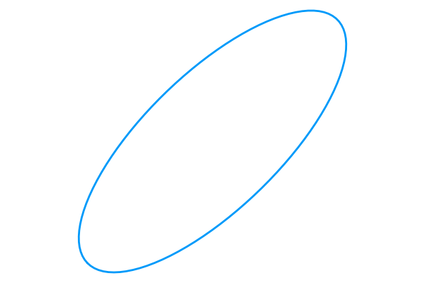
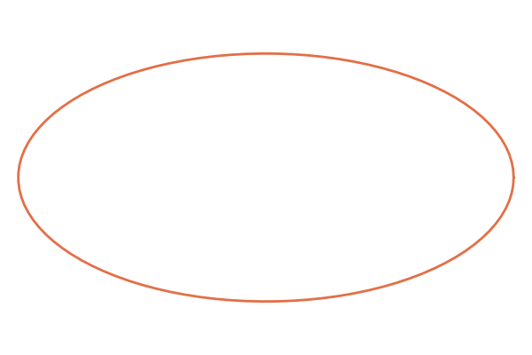
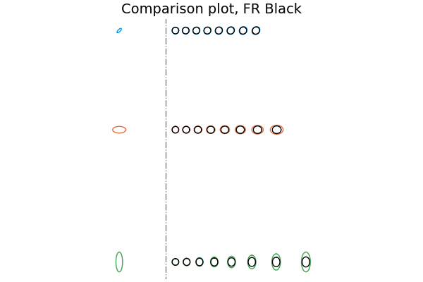
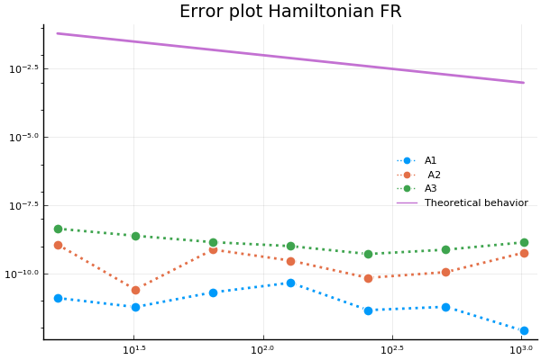
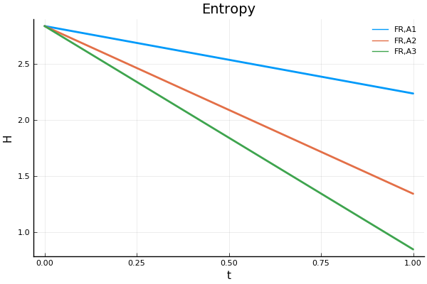

Before we begin...
Reading course at a glance
- Started in May
- Differential geometry, some geometric integration and some mechanics
- Main book: Lee's Introduction to smooth manifolds
- Final project: Some tasks to give an introduction to information geometry , the study of probability distributions from a geometric point of view
Moving between normal distributions...
Can we move so that entropy changes linearly?
Sounds like a question we can answer with geometry!
Mathematical background
Two Riemannian metrics on $\operatorname{Dens}(M)$
1. Fisher-Rao metric, $\langle \dot\rho,\dot\rho \rangle_\rho= \int_M \frac{\dot\rho^2}{\rho}\mu$
2. Wasserstein-Otto metric, $\langle \dot\rho,\dot\rho \rangle_\rho = \int_M |\nabla S|^2 \rho\mu$ where $\dot \rho =-\operatorname{div}(\rho \nabla S )$
Geodesic equations
Variational approach
A geodesic $\gamma:[0,1] \to \operatorname{Dens}(M)$ is a minimizer of the functional $$ \mathcal{A}(\gamma(t))=\int_0^1 (\dot{\gamma}(t),\dot{\gamma}(t))_{\gamma(t)} \mathrm{d}t $$
For a minimizer $\gamma_0$ of $\mathcal{A}$ it must hold that $$\left.\frac{\mathrm{d}\mathcal{A}(\gamma_0+\epsilon h)}{\mathrm{d}\epsilon} \right|_{\epsilon=0}=0$$
Plug in the expression of the Fisher-Rao metric...
$$\left.\frac{\mathrm{d}}{\mathrm{d}\epsilon} \mathcal{A}(\gamma_\epsilon)\right|_{\epsilon=0}=\int_0^1 \int_M \frac{2\dot h \dot\gamma_0}{\gamma_0}-\frac{\dot\gamma_0^2 h}{\gamma_0^2}\mathrm{d}s=0$$
...integrate by parts...
$$\int_0^1 \int_M h \left( \frac{\dot\gamma_0^2}{\gamma_0^2}-\frac{ 2\ddot\gamma_0 \gamma_0}{\gamma_0^2} \right)\mathrm{d}s=0$$
This holds for any $h$!
The fundamental lemma of variational calculus implies that $\ddot\gamma-\frac{\dot\gamma^2}{2\gamma}=0$
The Wasserstein–Otto case is more complex...
Given a perturbation of the geodesic $\gamma_0+\epsilon h$, how does $S$ depend on $\epsilon$ and $h$?
Use $\dot{\rho}=-\operatorname{div}(\rho \nabla S )$ to see that $\dot h = -\text{div} \left(h \nabla S_{\gamma_0+\epsilon h} \right)-\text{div}\left((\gamma_0+\epsilon h) \frac{\mathrm{d} \nabla S_{\gamma_0+\epsilon h}}{\mathrm{d}\epsilon} \right)$
Proceeding as before, the geodesics equations can be shown to be...
\[\begin{aligned} &\dot S+\frac{1}{2}|\nabla S|^2=0,\\ &\dot \gamma +\text{div}(\gamma \nabla S )=0 \end{aligned} \]
Zero-mean normal distributions
- Characterized by the $\frac{n(n+1)}{2}$ entries of the covariance matrix
- Coordinates for the statistical manifold of normal distributions, $\mathcal{S}$
- One can show that $\mathcal{S} \cong \operatorname{P}(n) \subset \operatorname{GL}(n)$
Geodesics?

Fisher–Rao: Straightforward!
Wasserstein-Otto: Not as straightforward!
For Fisher–Rao, note that $$ g_{ij}(\theta)=[I(\theta)]_{ij} $$
In the case of multivariate normal distributions, parametrized by the inverse covariance matrix, $$g_{ij,kl}=\frac{1}{4}\left(\Sigma_{ik}\Sigma_{jl}+\Sigma_{il}\Sigma_{kj}\right)$$
Tangent vectors are symmetric matrices, and $g_C(v,w)=\operatorname{Tr}(C^{-1} wC^{-1}v)$
Analogously to the infinite-dimensional case, we obtain that the geodesic equation is $$ \dot{C}C^{-1} \dot{C}=\ddot{C}$$

Equip $\operatorname{GL}(n)$ with the natural $L^2$ metric
Calculate derivative of the projection
Calculate the descending metric on $\operatorname{P}(n)$ from this
We obtain that $G_\Sigma(\dot \Sigma,\dot \Sigma)=\operatorname{Tr}(\Sigma S^2)$ with $\dot{\Sigma}=\Sigma S+S\Sigma $
Given expression for metric, proceed with standard variational arguments!
\[\begin{aligned} & \dot{S}=-S^2,\\ &\dot{\Sigma}=\Sigma S+S\Sigma=0. \end{aligned} \]
For more details, please see Klas Modin's article
Hamiltonian formulation and conserved quantities
- Formulation of the geodesic equations on the cotangent bundle.
- Let the position be a $Q \in \operatorname{P}(n)$
- Lagrangian is given by $L(Q,\dot{Q})=g_Q(\dot{Q},\dot{Q})$
- Use Legendre transformation to obtain the momentum $P=\frac{\partial L(Q,\dot{Q})}{\partial\dot{Q}}$
- Calculate $\dot{P}$ and use the geodesic equations to find expressions for Hamilton's equations
Fisher-Rao case
Hamilton's equations, with $Q=C=\Sigma^{-1}$: \[\begin{aligned}\begin{cases} \dot Q=QPQ\\ \dot P=-PQP \end{cases} \end{aligned}\]
$H_{FR}(P,Q)=\frac{1}{2}\operatorname{Tr}(PQPQ)$
Wasserstein–Otto case
Hamilton's equations, with $Q=\Sigma$: \[\begin{aligned}\begin{cases} \dot Q=PQ+QP\\ \dot P=-{P}^2 \end{cases} \end{aligned}\]
$H_{WO}(P,Q)=\operatorname{Tr}(PQP)$
Conserved quantities
$A \in\operatorname{GL}(n)$ acts on $Q \in \operatorname{P}(n)$ by $AQA^T$
We wish to determine the action of $A$ on the cotangent bundle.
We make the identification $T^* \operatorname{P}(n) \cong T \operatorname{P}(n)$ by the Frobenius inner product $\langle A,B \rangle_F=\operatorname{Tr}(AB)$.
We see that $ \langle P,A\dot{Q}A^T \rangle_F=\langle A P A^T,\dot{Q} \rangle_F$
Note that this means that the cotangent lifted action is $(A Q A^T,P) \to (Q,A^T PA)$
We conclude that $A \in \operatorname{GL}(n)$ acts on $(Q,P)$ by $$ (Q,P).A=(A^{-1} Q (A^{-1})^T,A^T P A) $$
\[\begin{aligned} H_{FR}\left((Q,P).A\right)=\operatorname{Tr}(PQPQ)\\ H_{WO}\left((Q,P).A\right)=\operatorname{Tr}(AA^TPQP) \end{aligned}\]
- $\operatorname{GL}(n)$ is a symmetry group in the Fisher–Rao case
- Note that $\mathfrak{Lie}(\operatorname{GL}(n))^* \cong M_n^* \cong M_n$.
- Infinitesimal action for any $\xi \in \mathfrak{Lie}(\operatorname{GL}(n))$ becomes $\xi(M)=\xi M+M\xi^T$
- The momentum map $\mathcal{J}:T^*P(n) \to M_n$ is given by $$ \langle\mathcal{J}(P),\xi\rangle= \langle P,\xi(Q)\rangle=\operatorname{Tr}(P\xi Q+PQ \xi^T)$$
- The corresponding conserved quantity is $2PQ$
- $\operatorname{O}(n)$ is a symmetry group for both cases
- Infinitesimal action for any $\xi \in \mathfrak{Lie}(\operatorname{O}(n))$ becomes $\xi(M)=\xi M-M\xi$, so $$\langle\mathcal{J}(P),\xi\rangle= \langle P,\xi(Q)\rangle=\operatorname{Tr}(P\xi Q-PQ \xi)$$
- The corresponding conserved quantity is $[Q,P]=QP-PQ$
Numerical solution of Hamilton's equations
- Integrate Hamilton's equation using a symplectic method
- Use symplectic Euler in both cases
Symplectic Euler for Fisher–Rao
\[\begin{aligned}\begin{cases} P_{n+1}=P_n -h P_{n+1}Q_nP_{n+1}\\ Q_{n+1}=Q_n + h Q_{n}P_{n+1} Q_{n} \end{cases} \end{aligned}\]
Symplectic Euler for Wasserstein–Otto
\[\begin{aligned}\begin{cases} P_{n+1}=P_n-h P_{n+1}^2\\ Q_{n+1}=Q_n+h \left(Q_nP_{n+1}+P_{n+1}Q_{n}\right) \end{cases} \end{aligned}\]
Gallery of solutions
- In all cases, $Q_0=I$
- $P_0$ will vary...
|  |  | 
|
Evolution of $Q=\Sigma^{-1}$, Fisher–Rao
Evolution of $Q^{-1}=\Sigma^{-1}$, Wasserstein-Otto
How does Q compare between cases?
In the beginning...
Conserved quantities?
|  |
Behavior of Shannon entropy.
|  |
Why?
- $C(t)$ is a Fisher-Rao geodesic.
- $\dot{H}(t)=-\frac{\mathrm{d}}{\mathrm{d}t}\left(\log(\det(C(t)))\right)=-\operatorname{Tr}(C^{-1}\dot{C}) $
- $-\operatorname{Tr}(C^{-1}\dot{C})=-\operatorname{Tr}(C^{-1} C P C)=-\operatorname{Tr}(PC)$...
- $PC$ preserved on geodesics!
So...
- $H(t)$ decreases linearly!
- In the end, we will have some degenerate distribution!
- We can find a curve between two normal distributions changing linearly in $H$!